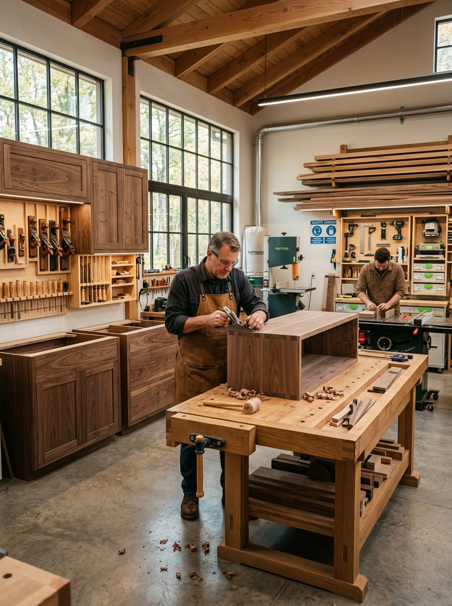

Donde la materia bruta encuentra su propósito.
Fundado en la creencia de que las cosas buenas toman tiempo. Seleccionamos personalmente cada tablón, asegurando que provenga de fuentes sustentables y se seque a la perfección antes de que un formón lo toque.
